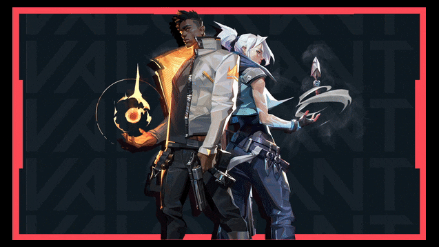
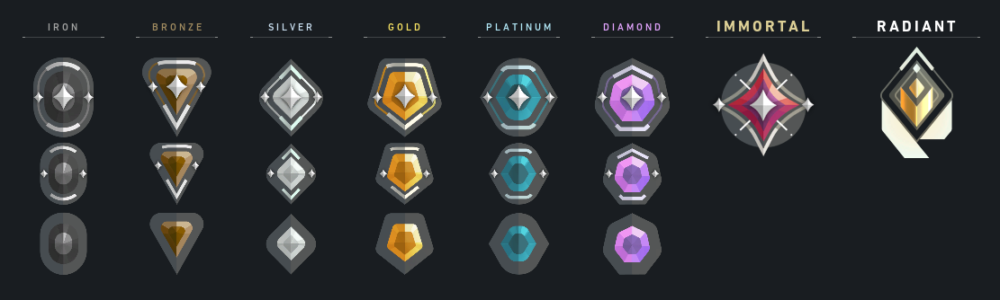

Fue lanzado para Microsoft Windows el 2 de junio de 2020 después de su beta cerrada lanzada el 7 de abril de 2020. Valorant es un videojuego de disparos táctico en equipo y en primera persona ambientado en un futuro próximo.1234 Los jugadores asumen el control de agentes, personajes que provienen de una gran cantidad de países y culturas de todo el mundo. En el modo de juego principal, los jugadores se unen al equipo atacante o defensor con cada equipo que tiene cinco jugadores. Los agentes tienen habilidades únicas y usan un sistema económico para comprar sus habilidades y armas. El videojuego tiene una variedad de armas que incluyen pistolas, subfusiles, escopetas, ametralladoras, fusiles de asalto y fusiles de francotirador.

El equipo atacante tiene una bomba, llamada Spike, que necesitan plantar en un sitio. Si el equipo atacante protege con éxito la Spike y detona, obtendrán un punto. Si el equipo defensor desactiva con éxito la Spike, o el temporizador de la ronda de 100 segundos expira, el equipo defensor obtiene un punto. Si se eliminan todos los miembros de un equipo, el equipo contrario gana un punto. Después de doce rondas, el equipo atacante cambia al equipo defensor y viceversa. El primer equipo en ganar 13 rondas gana la partida.
En total, hay 4 modos de juego: Standard.- que es una partida regular, Spike rush.- Un modo de juego que dura menos, Deathmatch.-Modo donde no se usan habilidades y respawneas, Competitivo.- Son partidas como las normales pero en estas se juega por subir o bajar un rango
Valorant está siendo desarrollado y publicado por Riot Games, que previamente desarrolló League of Legends.7 El desarrollo comenzó en 2014, dentro de su división de investigación y desarrollo. A Joe Ziegler, Director del videojuego Valorant, se le atribuye la creación de la idea inicial de Valorant al formular qué otros videojuegos podría desarrollar Riot al hablar con otros diseñadores de videojuegos. David Nottingham es el director creativo de Valorant. Trevor Romleski, exdiseñador de League of Legends y Salvatore Garozzo, exjugador profesional y diseñador de mapas de Counter-Strike: Global Offensive son diseñadores de juegos de Valorant.8 Moby Francke, exdesarrollador de Valve, quien ha sido diseñador de arte y personajes para Half-Life 2 y Team Fortress 2, es el director de arte de Valorant.910 El juego utiliza el motor Unreal Engine. Valorant se dio a conocer por primera vez bajo el título provisional Project A en octubre de 2019.12. 
Asi como valorant tiene su modo de juego competitivo o en otras palabras Partidas rankeadas, cuenta con sus rangos de competitividad y cada uno de estos se divide en tres subniveles dentro de los mismos, desde Hierro siendo lo mas bajo seguido por Bronze, Plata, Oro, Platino, Diamante y los ultimos dos mas reconocidos, Inmortal y Radiante, cada uno con sus respectivas subdivisiones exceptuando los ultimos dos. (Cada vez que un "Acto" nuevo empieza se resetean las estadisticas de rankeadas, por lo que se debera jugar 5 o mas juegos de ranked para poder determinar tu rango, puedes subir cada vez mas de rango conforme juegas el juego tomara en cuenta lo que hiciste y te pondra en un rango entre Hierro y Bronze, en algunos casos hasta Plata 1)
Riot games en su juego valorant, implementa un sistema de pase de batalla de temporada cada treinta dias. Los pases de batalla o de temporada sirven para poder acceder a desafios exclusivos y obtener mas recompensas por cada nivel que subas, en el caso de el pase de batalla(pase del "act") cada pagina tiene un total de cinco recompensas donde pueden ser skins para armas, sprays, radiante points y titulos personalizables, ademas de que valorant tomo en cuenta a personas que no compren el pase de batalla y genero recompensas gratis cada dos hojas ya sea radiante points y/o skins para armas. Ademas de dejar el hype a los jugadores de que sera el siguiente pase de batalla, riot games tambien nos deja otra incognita al decirnos que cada pase de batalla saldra otro nuevo personaje al juego. En pase ante pasado vimos a Skye, en el pasado vimos a Yoru y en el actual esta Astra. Todavia no sabemos que nos deparara el siguiente pase.
Economia del juego
Como cada juego actual existen monedas virtuales ya sea para comprar cosas internas en el, sea lo que sea. Valoran se divide en dos tipos de monedas: Valorant points(VP) y Radiante points(RP). Hay que tomar en cuenta que los Valorant points a diferencia de los Radiante points cuestan dinero real y se puede obtener atravez de microtransacciones via paypal, tarjeta de credito o debito y tarjetas fisicas canjeables por estas monedas. Empezamos diciendo que los valorant points son la moneda base para poder comprar de todo, desbloquear un agente te cuesta 1000 VP, el pase de batalla 1000 VP y las cosmeticas pueden variar de hasta 875 VP hasta 2176 VP.Ahora los radiante points, como te mencione antes puedes comprar skins cosmeticas a tu gusto, solo que estas al comprarse estan en un "estado" base, cuando digo esto me refiero a que es igual a las skins default del juego cambiando solamente el aspecto. Dentro de las skins compradas existe un menu que consiste en comprar tres niveles para el arma el primero es el base, despues para desbloquear el siguiente necesitas 10 RP y lo que hace esta actualizacion es cambiar algo dentro de el arma, regularmente es una animacion diferente a como recargar comparado con la original y el tercer niver y ultimo es a lo que se le dice finisher, cuando tu matas a alguien arriba del menu de habilidades de tu personaje se puede ver que surge una burbuja marcandote que acabas de hacer una kill lo default es una pequena calaberita, pero cuando matas a alguien con la skin actualizada al maximo nivel cambia esa burbuja por otra cosa dependiendo de la skin, eso es un finisher. Ya despues de eso solo te quedaria comprar colores extra con un costo de 15 RP por color.
 Riot games en su juego valorant, implementa un sistema de pase de batalla de temporada cada treinta dias. Los pases de batalla o de temporada sirven para poder acceder a desafios exclusivos y obtener mas recompensas por cada nivel que subas, en el caso de el pase de batalla(pase del "act") cada pagina tiene un total de cinco recompensas donde pueden ser skins para armas, sprays, radiante points y titulos personalizables, ademas de que valorant tomo en cuenta a personas que no compren el pase de batalla y genero recompensas gratis cada dos hojas ya sea radiante points y/o skins para armas. Ademas de dejar el hype a los jugadores de que sera el siguiente pase de batalla, riot games tambien nos deja otra incognita al decirnos que cada pase de batalla saldra otro nuevo personaje al juego. En pase ante pasado vimos a Skye, en el pasado vimos a Yoru y en el actual esta Astra. Todavia no sabemos que nos deparara el siguiente pase.
Riot games en su juego valorant, implementa un sistema de pase de batalla de temporada cada treinta dias. Los pases de batalla o de temporada sirven para poder acceder a desafios exclusivos y obtener mas recompensas por cada nivel que subas, en el caso de el pase de batalla(pase del "act") cada pagina tiene un total de cinco recompensas donde pueden ser skins para armas, sprays, radiante points y titulos personalizables, ademas de que valorant tomo en cuenta a personas que no compren el pase de batalla y genero recompensas gratis cada dos hojas ya sea radiante points y/o skins para armas. Ademas de dejar el hype a los jugadores de que sera el siguiente pase de batalla, riot games tambien nos deja otra incognita al decirnos que cada pase de batalla saldra otro nuevo personaje al juego. En pase ante pasado vimos a Skye, en el pasado vimos a Yoru y en el actual esta Astra. Todavia no sabemos que nos deparara el siguiente pase.
 el pase de batalla 1000 VP y las cosmeticas pueden variar de hasta 875 VP hasta 2176 VP.Ahora los radiante points, como te mencione antes puedes comprar skins cosmeticas a tu gusto, solo que estas al comprarse estan en un "estado" base, cuando digo esto me refiero a que es igual a las skins default del juego cambiando solamente el aspecto.
el pase de batalla 1000 VP y las cosmeticas pueden variar de hasta 875 VP hasta 2176 VP.Ahora los radiante points, como te mencione antes puedes comprar skins cosmeticas a tu gusto, solo que estas al comprarse estan en un "estado" base, cuando digo esto me refiero a que es igual a las skins default del juego cambiando solamente el aspecto.  Dentro de las skins compradas existe un menu que consiste en comprar tres niveles para el arma el primero es el base, despues para desbloquear el siguiente necesitas 10 RP y lo que hace esta actualizacion es cambiar algo dentro de el arma, regularmente es una animacion diferente a como recargar comparado con la original y el tercer niver y ultimo es a lo que se le dice finisher, cuando tu matas a alguien arriba del menu de habilidades de tu personaje se puede ver que surge una burbuja marcandote que acabas de hacer una kill lo default es una pequena calaberita, pero cuando matas a alguien con la skin actualizada al maximo nivel cambia esa burbuja por otra cosa dependiendo de la skin, eso es un finisher. Ya despues de eso solo te quedaria comprar colores extra con un costo de 15 RP por color.
Dentro de las skins compradas existe un menu que consiste en comprar tres niveles para el arma el primero es el base, despues para desbloquear el siguiente necesitas 10 RP y lo que hace esta actualizacion es cambiar algo dentro de el arma, regularmente es una animacion diferente a como recargar comparado con la original y el tercer niver y ultimo es a lo que se le dice finisher, cuando tu matas a alguien arriba del menu de habilidades de tu personaje se puede ver que surge una burbuja marcandote que acabas de hacer una kill lo default es una pequena calaberita, pero cuando matas a alguien con la skin actualizada al maximo nivel cambia esa burbuja por otra cosa dependiendo de la skin, eso es un finisher. Ya despues de eso solo te quedaria comprar colores extra con un costo de 15 RP por color.